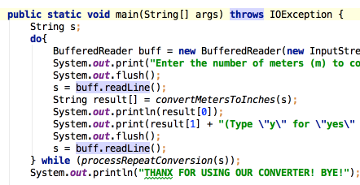

You can view all statements within the method where certain exceptions can be caught. Just place the caret at the throws keyword in a method declaration, press &shortcut:HighlightUsagesInFile; and select the desired exception class from the list. This will also work for try and catch.
